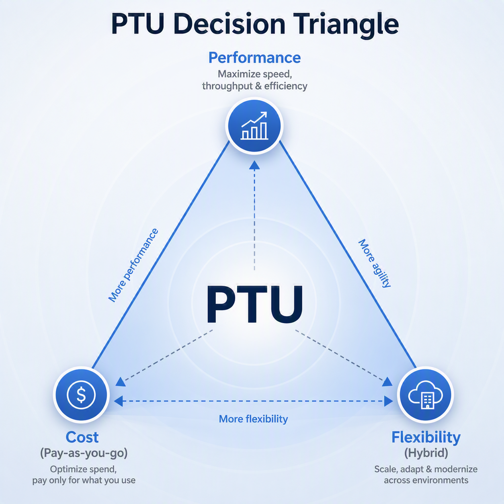

Moving beyond sizing toward intelligent deployment decisions

As enterprises scale generative AI into production, capacity planning often becomes one of the most important architecture decisions. Teams commonly ask, “How much capacity do I need?” The better question is, “What deployment model should support this workload reliably, cost-effectively, and at production scale?”
This whitepaper introduces a decision-first approach to AI workload capacity planning. The goal is to help teams align deployment models with workload behavior, balance performance and cost, and transition from experimentation to production with greater confidence.
In many production AI programs, capacity planning happens too late. Architecture decisions are made first, and sizing is treated as a downstream calculation. That sequence creates avoidable risk: teams can over-commit to dedicated capacity, under-plan for latency-sensitive usage, or miss the economics of hybrid deployment patterns.
A decision-first model starts with workload behavior, then maps that behavior to the right architecture pattern. Only after that should teams size capacity, validate cost, and prepare deployment operations.
| Architecture pattern | Best fit | Planning implication |
|---|---|---|
| Dedicated / baseline-focused | Stable, predictable, latency-sensitive production workloads | Use provisioned capacity for steady-state demand; validate with official sizing tools and benchmark results. |
| Elastic / usage-based | Variable or bursty workloads where demand is difficult to predict | Pay-per-token or usage-based patterns can reduce over-commitment risk during early or unpredictable demand. |
| Hybrid baseline + elastic | Common enterprise pattern with stable baseline plus burst periods | Use dedicated capacity for baseline and elastic routing for peaks; monitor usage and optimize continuously. |
Sizing should validate the selected pattern, not drive the entire architecture by itself. At this stage, teams should use official Microsoft sizing guidance and the Microsoft Foundry capacity calculator, benchmark representative traffic, and validate cost with the current pricing model.
The core planning principle is simple: design for baseline, scale for peak. Baseline demand is the predictable portion of the workload that can justify dedicated capacity. Peak demand is the burst portion that should be treated separately rather than forcing the entire system to be sized to rare spikes.
Modern AI systems generate usage signals that should be part of the capacity planning process. Planning based only on estimates creates avoidable error. Planning with telemetry creates a repeatable decision model that can improve over time.
The move from proof of concept to production is rarely just a model-selection exercise. It requires a production platform view: deployment strategy, capacity model, monitoring, routing, cost governance, and operational ownership.
Capacity planning should sit inside the broader enterprise AI platform layer. It connects model selection, deployment strategy, routing, API management, observability, and cost governance. When those decisions are handled together, teams can move faster without treating every workload as a one-off capacity exercise.
| Platform layer | Capacity planning role |
|---|---|
| Model selection | Choose models with the right latency, cost, and throughput characteristics. |
| Routing and API management | Apply routing or spillover patterns based on demand shape and resiliency needs. |
| Observability | Use telemetry to compare real usage against planning assumptions. |
| Cost governance | Map capacity decisions to chargeback, reservations, utilization, and optimization reviews. |
| Production operations | Scale, monitor, and optimize as traffic and model portfolios evolve. |
An architecture-first approach helps teams reduce deployment friction and improve the quality of capacity conversations across engineering, platform, and business stakeholders.
| Engineering teams | Business stakeholders | Platform teams |
|---|---|---|
| Faster movement from design to production; fewer re-architecture cycles; clearer performance expectations | Better cost-performance alignment; reduced deployment risk; more transparent capacity rationale | Standardized patterns; improved governance and reuse; capacity planning tied to operating signals |
As enterprise AI adoption accelerates, successful teams will differentiate not only by what they build, but by how reliably and economically they operate AI workloads at scale. A decision-first, architecture-aware planning model shifts the conversation upstream: from “how many PTUs do we need?” to “what operating model best fits this workload?”
That shift helps teams make better deployment decisions, reduce capacity planning friction, and create sustainable production systems that can evolve as usage patterns change.
Most calculators tell you how much capacity to estimate. An architecture-driven approach helps you decide whether dedicated capacity is the right model in the first place — and what deployment pattern to build around it.